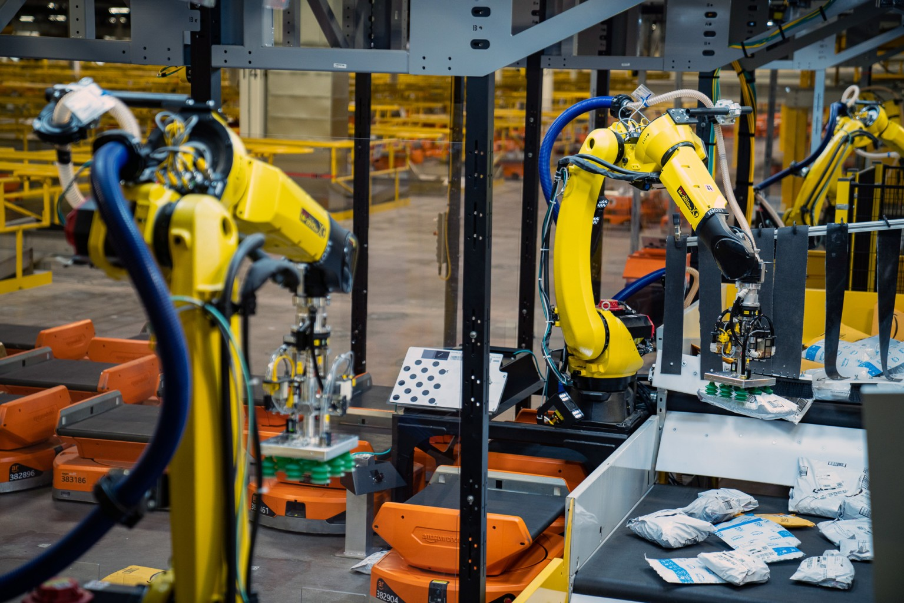

I'm George, and I am a programmer.
I am a Mechatronics Apprentice for Amazon! I get to work on a number of systems, from large conveyors, automatic sorting robots, and robotic arms, like these ones below. It's a very exciting experience!

Photo by F4D Studio via Amazon Science
What do you know?I know a bit about programming from my educational background at Northern Arizona University, as well as some self taught research for projects I've done:
- Python
- Java
- C
- SQL
- Industrial Electricity I
- Mechanical Components I
- Fluid Powers
- Programmable Logic Controllers I
-
Continuing developments on this site!
This is my first published website created with HTML, CSS, and jQuery. As I continue to learn more about web development, expect to find more site functionality in the future.